Dans ce module, nous allons décrire une installation de distribution électrique alimentant un équipement technique en basse tension.
L’électricité est un domaine que les non-spécialistes hésitent souvent à aborder. Quelques connaissances de base vous permettront de vous intéresser à ce domaine important de la technique.
La connaissance des dangers ne doit pas vous détourner de l’électricité, mais vous conduire à évaluer vos possibilités d’intervention sur des équipements électriques ou à leur voisinage.
Réseaux de distribution d'électricité
Depuis le départ de la centrale de production d’EDF jusqu’à l’appareil connecté, l’électricité est transportée et transformée par un grand nombre d’équipements intermédiaires.
Dans ce module, nous allons nous intéresser essentiellement à la basse tension, c’est-à-dire au domaine d’utilisation classique de l’énergie électrique pour les besoins de l’usine : éclairage, moteurs, etc. Le raccordement électrique de l’usine sur le réseau EDF est réalisé en haute tension (nous étudierons cet aspect dans le module n° 17).
Les armoires électriques alimentant les équipements techniques de l’usine peuvent sembler toutes différentes et très complexes pour un non-électricien. Pourtant, on retrouve dans ces armoires des éléments assurant les mêmes fonctions, souvent à la même place. La connaissance de ces quelques fonctions de base permettra de « deviner » la nature des appareils et de comprendre globalement leur fonctionnement.
La connaissance des installations électriques ne serait pas complète si l’on n’abordait pas le problème de la sécurité. Nous examinerons donc les défauts et les incidents survenant sur les installations, les moyens de protection, les dangers de l’électricité pour les personnes, les règles essentielles de sécurité à observer.
Avant de commencer à examiner les différents appareils rencontrés sur les installations de distribution d’électricité, nous allons nous intéresser aux fonctions de ces appareils. Ceci permettra de mieux comprendre les principes de fonctionnement et les domaines d’utilisation de chacun des équipements envisagés.
Lorsque l’interrupteur de commande de l’éclairage d’une pièce est en position « extinction de la lampe » (on dit que l’interrupteur est « ouvert » car la connexion n’est pas établi), on observe entre les deux contacts une tension égale à celle du réseau d’alimentation.
On verra plus loin (cf. page 27) que la tension entre deux points d’un circuit électrique est une notion comparable à la différence de pression entre deux points d’un circuit hydraulique : si la tension est forte, la circulation d’un courant entre les deux points sera favorisée.
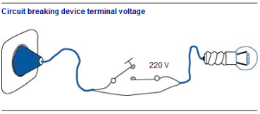
Fig. 1
Pour les deux contacts de notre interrupteur ouvert, l’absence de circulation de courant électrique est garantie à condition que la tension ne soit pas trop forte, et que la distance entre les contacts ne soit pas trop faible : sinon, la circulation du courant s’établira spontanément sous la forme d’un arc électrique.
La fonction de sectionnement est celle qui garantit que la circulation de courant est réellement impossible lorsque l’appareil est en position d’ouverture. Pour cela, il faut que la distance entre les deux contacts de l’appareil soit suffisamment grande, en fonction de la tension du circuit.
Un dispositif de sectionnement adapté à la tension de l’installation est obligatoire à l’origine de toute installation électrique
ProtectionNous examinerons plus loin (cf. page 16) les différents défauts de fonctionnement qui peuvent survenir sur les circuits de distribution d’électricité. On sait que ces défauts peuvent souvent entraîner des conséquences graves, aussi est-il normal de prévoir des dispositifs de protection adéquats.
On distingue trois types de défauts : court-circuit, défaut d’isolement et surcharge. On peut donc en déduire qu’il existe au moins trois types de dispositifs de protection pour se prémunir contre chacun d’entre eux.
Les dispositifs de protection provoquent l’ouverture d’un contact en cas de détection d’un défaut. On les appelle donc souvent « déclencheurs ».
La commandeDans une installation industrielle, de nombreux appareils électriques doivent être mis en service et à l’arrêt selon les nécessités de l’activité, parfois très fréquemment. Les moteurs permettant de manipuler le grappin au-dessus de la fosse de déchets sont actionnés des centaines de fois par jour. La fonction de commande est celle qui assure la mise en marche et l’arrêt d’un équipement électrique chaque fois que nécessaire, en mode normal d’exploitation.
La coupureContrairement à une idée courante, il est parfois aussi délicat d’ouvrir un contact électrique pour arrêter l’équipement que de fermer ce contact pour le mettre en service. Lors de l’ouverture d’un appareil de coupure sur un circuit en train de fonctionner (c’est-à-dire sur un circuit où un courant électrique circule), il est fréquent d’observer un arc électrique. Cet arc est d’autant plus violent que l’intensité du courant était grande au moment de l’ouverture du circuit. Il est susceptible d’endommager ou même de détruire l’appareil de coupure. La puissance de l’arc peut faire fondre les contacts et les souder.
Pour pouvoir mettre hors service un équipement sans risque, il faut donc disposer d’un appareil de coupure capable de résister à l’arc électrique au moment de l’ouverture. Le pouvoir de coupure d’un appareil correspond à l’intensité maximale du courant pouvant traverser le circuit juste avant l’ouverture des contacts.
Les appareils de sectionnement ont généralement un pouvoir de coupure faible : ils ne doivent pas être ouverts lorsque les équipements alimentés sont en fonctionnement. Les appareils de commande et de protection doivent nécessairement pouvoir s’ouvrir sans problème à tout moment, même lorsque les équipements alimentés sont en fonctionnement. Ils présentent donc un pouvoir de coupure correspondant au moins à l’intensité maximale du courant consommé par les équipements.
Nous allons examiner successivement les principaux éléments traversés par le courant dans l’armoire électrique d’un équipement technique classique, depuis l’entrée du câble d’alimentation jusqu’aux sorties vers les équipements raccordés sur le circuit.
Le schéma ci-contre résume ce trajet.
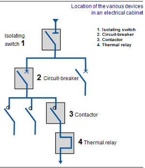
Fig. 2
Le sectionneurIl permet la mise hors tension manuelle de la partie d’installation située en aval, en garantissant la coupure effective de l’électricité. Certains modèles permettent une vérification visuelle de l’ouverture des contacts.
Le sectionneur est très souvent présent à l’entrée d’un coffret ou d’une armoire électrique, et permet de mettre hors tension l’ensemble du matériel.
La manette du sectionneur est disposée sur le corps du sectionneur lui-même, ou bien reliée à une tringlerie pour permettre la manœuvre depuis l’extérieur du coffret ou de l’armoire électrique.
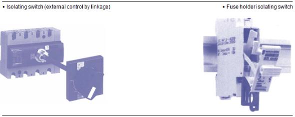
Fig. 3
Le sectionneur porte fusiblesCertains modèles de sectionneurs sont équipés de porte-fusibles. Ils réalisent à la fois la fonction de sectionnement et une fonction de sécurité (voir le paragraphe ci-dessous relatif aux fusibles). Le dégagement des cartouches fusibles nécessite l’ouverture du sectionneur, ce qui permet le changement des cartouches en toute sécurité.
Le sectionneur avec contacts de précoupureLe sectionneur ordinaire ne possède pas de « pouvoir de coupure » : si on l’ouvre alors qu’il débite un courant de forte intensité vers les appareils raccordés en aval, il se produit au niveau des contacts un violent arc électrique qui peut détériorer le sectionneur et engendrer des dégâts autour de lui.
Lorsque le sectionneur alimente beaucoup d’appareils commandés par des relais, une astuce consiste à insérer dans le mécanisme de commande du sectionneur un contact auxiliaire qui alimente la source d’énergie des relais, et qui s’ouvre un peu avant l’ouverture des contacts du sectionneur. De cette façon, si on ouvre le sectionneur brutalement « en charge » (c’est-à-dire sans avoir préalablement mis à l’arrêt l’ensemble des appareils raccordés en aval), l’alimentation électrique des appareils est interrompue d’abord par manque d’alimentation des relais, si bien que lorsque les contacts du sectionneur se décollent, il ne passe déjà plus de courant.
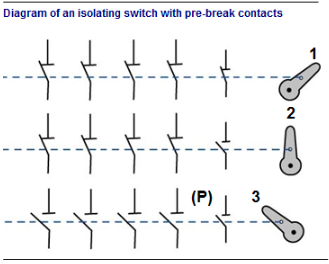
Fig. 4
En position 1, tous les contacts sont fermés. L’installation est normalement alimentée.
En position 2 (position intermédiaire d’ouverture), les contacts principaux sont toujours fermés mais le contact de précoupure s’ouvre. Les appareils raccordés sont mis à l’arrêt car les relais qui les commandent ne sont plus sous tension. Il n’y a plus de courant dans les contacts principaux bien qu’ils soient toujours fermés.
En position 3, les contacts principaux finissent par s’ouvrir à leur tour, sans risque d’arc électrique.
Rôle de sécurité du sectionneurLe sectionneur permet de garantir que l’installation électrique en aval n’est plus sous tension : il joue donc un rôle important dans les procédures de sécurité pour les travaux effectués sur les installations électriques hors tension, à condition de pouvoir être condamné en position d’ouverture. Ces procédures sont abordées page 18.
Le sectionneur n’est pas un organe de commande des appareils du circuit électrique. Il n’est pas destiné à être souvent manœuvré et n’a pas à résister à un grand nombre de manipulations.
Les fusiblesÀ proximité du sectionneur se trouvent souvent les fusibles. Ce sont des cartouches contenant généralement un fil métallique que traverse le courant distribué. Si le courant est excessif, l’échauffement qu’il provoque entraîne la fusion du fil métallique et la rupture de la circulation d’électricité.
Comme le fusible fond pour une certaine intensité de courant électrique, on doit choisir la cartouche en fonction du courant prévu en cours de fonctionnement normal. Si le fusible est surdimensionné, il autorise un courant trop fort et ne joue pas pleinement son rôle d’organe de sécurité.
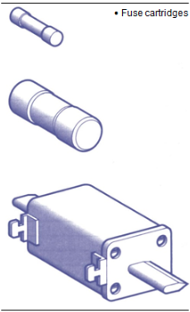
Fig. 5
Dans le cas des moteurs, l’intensité du courant au démarrage est très supérieure à l’intensité consommée en fonctionnement continu. Pour éviter de griller les fusibles à chaque démarrage, on doit utiliser des cartouches spéciales de type « aM » (« accompagnement Moteur »). Ces fusibles admettent un courant plus élevé pendant un court laps de temps, pour permettre le démarrage sans déclenchement.
Certains fusibles sont équipés de voyants de fusion : on peut vérifier, sans rien démonter, si le fusible a claqué. Ce dispositif est très utile pour localiser rapidement un défaut en cas de panne.
Sur une installation de distribution d’électricité triphasée équipée de fusibles, chaque phase est protégée. Si l’un des fusibles saute, il faut empêcher les équipements raccordés de fonctionner sur les deux phases restantes seulement, car cela peut les endommager. On trouve des systèmes de fusibles munis de « percuteurs », qui sont des dispositifs provoquant l’ouverture du circuit sur toutes les phases dès que l’un des fusibles saute.
DisjoncteurLe disjoncteur est un appareil de sécurité que l’on trouve très souvent juste après le sectionneur sur l’alimentation d’un ensemble d’appareils électriques. Son rôle consiste à couper l’alimentation électrique d’un circuit en cas de défaut. Si l’installation électrique est triphasée, le disjoncteur doit couper simultanément chaque phase.
Le disjoncteur présente aussi une commande manuelle (boutons poussoirs ou manette à basculement).
Le principe de la commande automatique d’ouverture d’un disjoncteur dépend du type de défaut contre lequel on veut se prémunir.
Interrupteurs à coupure magnéto-thermique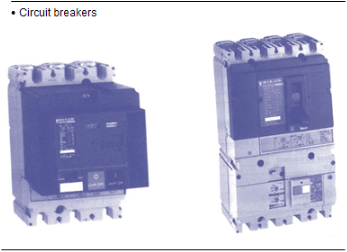
Fig. 6
Il permet de mettre en sécurité l’installation électrique dans deux cas de figure distincts. En cas de court-circuit sur l’installation (deux fils de phase entrent en contact, ou bien un fil de phase et le fil de neutre), le disjoncteur ouvre le circuit. Le court-circuit est détecté par la présence soudaine d’un courant d’intensité extrêmement élevée. Le principe du dispositif de coupure est celui d’un électroaimant : lorsqu’une bobine de fil métallique est parcourue par un courant électrique, elle devient un aimant. Cet aimant est d’autant plus puissant que l’intensité du courant traversant la bobine est forte.
Le courant normal de l’installation, circulant dans la bobine du disjoncteur, entraîne un effet d’aimantation modéré. Lorsque le court-circuit survient, l’électroaimant devient beaucoup plus puissant et provoque le basculement d’un contact, c’est-à-dire l’ouverture du circuit électrique. Cette réaction est quasi instantanée. Le temps de déclenchement est de l’ordre d’un centième de seconde pour un courant dix fois supérieur à la normale (ce temps diminue pour un courant encore plus fort).
En cas de surcharge, c’est-à-dire d’augmentation modérée mais permanente de l’intensité du courant électrique dans l’installation, l’électroaimant du déclencheur magnétique n’est pas suffisamment sensible pour provoquer la coupure du disjoncteur. Il faut utiliser un autre effet du courant électrique : l’échauffement qu’il provoque dans les conducteurs qu’il traverse. C’est la déformation d’un élément métallique à l’intérieur du disjoncteur, sous l’effet de l’échauffement dû au courant, qui commande la disjonction. Le déclenchement est beaucoup plus lent que dans le cas d’un court-circuit : le risque est en effet moins lourd, et il faut éviter de déclencher trop tôt en cas de légère surintensité passagère. La coupure demande de l’ordre d’une minute pour un courant supérieur de 50\
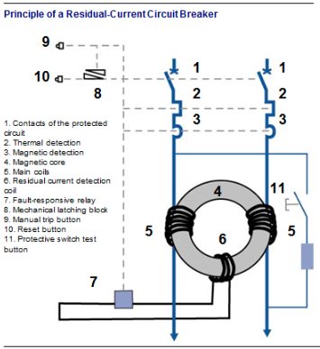
Fig. 7
Les fonctions magnétiques (protection contre les courants de court-circuit) et thermique (protection contre les surintensités permanentes) sont très souvent associées dans le même disjoncteur, que l’on appelle « magnéto-thermique ».
Le disjoncteur différentiel
Le fonctionnement du disjoncteur différentiel est plus subtil : il doit surveiller l’égalité entre le courant « partant » par le (ou les) fils de phase et le courant « revenant » par le fil de neutre. Si ces deux courants ont des intensités différentes, c’est qu’une partie du courant « s’échappe » du circuit, mettant en danger les personnes qui pourraient être exposées à ce « courant de fuite » (on aborde cette situation, appelée « défaut d’isolement » au paragraphe suivant).
Les différents conducteurs du circuit protégé sont enroulés séparément sur un même tore (anneau), de façon que leurs effets magnétiques s’annulent. S’il existe un déséquilibre entre les courants de ces bobines, un flux magnétique proportionnel à la différence des intensités va circuler dans le tore et engendrer un courant dans la bobine de détection. Le relais couplé à la bobine actionne le mécanisme de déclenchement.
En agissant sur le bouton de test, on fait circuler un courant entre l’entrée d’une des bobines principales et la sortie de l’autre, à travers une résistance. Ce courant ne circule donc que dans l’une des bobines, et si tout se passe comme prévu ce déséquilibre doit provoquer un déclenchement du disjoncteur. Si le disjoncteur ne déclenche pas, c’est qu’il ne fonctionne plus correctement.
Lorsque le disjoncteur n’est utilisé que pour ses fonctions de sécurité, il n’est pas manœuvré très souvent et n’a pas à résister à de fréquentes manipulations. En revanche, il est susceptible de s’ouvrir à n’importe quel moment, particulièrement lorsqu’un courant très important traverse les conducteurs. Il doit posséder un grand pouvoir de coupure, c’est-à-dire être conçu de manière à résister aux arcs électriques lors des déclenchements.
Commandes électromécaniquesLe sectionneur commande souvent l’ensemble des équipements raccordés sur une même armoire électrique. Le disjoncteur protège en bloc tous les appareils constituant un ensemble technique : par exemple, sur un compresseur d’air, son moteur, son système refroidisseur d’air, etc.
Pourtant, les impératifs de fonctionnement des équipements électriques imposent souvent que chacun des composants d’un système puisse être mis en service ou à l’arrêt indépendamment des autres. Il faut donc prévoir un système qui, une fois le sectionneur et le disjoncteur fermés, permettra de mettre ou non sous tension tel ou tel élément de l’installation.
Ce rôle de commande individuelle de chaque élément est joué par le contacteur.
Contacteur Principe de fonctionnement d’un contacteurLa fermeture ou l’ouverture des contacts de commande de l’équipement à mettre en marche ou à l’arrêt est réalisée grâce à un électro-aimant.
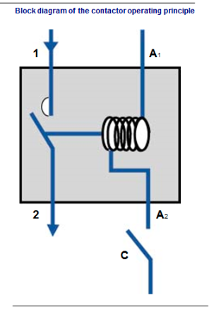
Fig. 8
Les bornes A1 et A2 sont celles de la bobine de l’électroaimant : elles font partie du circuit de commande, souvent alimenté en très basse tension (24 ou 48 volts). Lorsque la bobine est alimentée en courant (contact C, extérieur au contacteur, fermé), elle maintient le contact de puissance (connecté aux bornes 1 et 2 et alimenté à la tension des équipements commandés, 400 volts en général) dans une position fixe que l’on appelle la position de travail (en général, c’est la position de fermeture). Si la bobine n’est plus alimentée, elle relâche son action et un ressort de rappel ramène les contacts dans la position de repos.
Pouvoir de coupureLe contacteur doit être capable d’établir lors de sa fermeture le courant de démarrage de l’équipement commandé, et de couper lors de la mise à l’arrêt son courant normal de fonctionnement. Il doit donc présenter un pouvoir de coupure suffisant, comme le disjoncteur.
D’autre part, le contacteur est parfois sollicité de manière répétitive, le nombre d’ouvertures et de fermetures au cours de l’existence de l’installation peut se compter par millions. Lorsque le contacteur a atteint le nombre de manœuvres maximal préconisé par son fabricant, il est préférable de le changer préventivement avant qu’il ne tombe en panne. Un contacteur qui ne fonctionne plus peut se bloquer dans n’importe quelle position et occasionner quelques dégâts sur les équipements électriques.
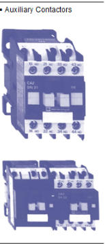
Fig. 9
Contacts auxiliairesSouvent, lorsqu’un équipement est mis sous tension (ou hors tension), on veut déclencher automatiquement différentes actions : allumer un voyant sur un pupitre de contrôle, mettre en service un autre appareil, etc. Pour cela, on utilise des contacts actionnés par la bobine du contacteur, et qui pourront eux même commander des ouvertures ou fermetures de circuits. Ce sont les contacts auxiliaires.
Les contacteurs possèdent parfois un ou deux contacts auxiliaires, comme ceux présentés sur les photos ci-dessous.
Les bornes A1 et A2 (à droite) sont celles de la bobine de l’électroaimant (circuit de commande du contacteur).
Les six bornes de gauche (1, 2, 3, 4, 5, 6) sont reliées aux contacts de puissance, en série avec l’équipement commandé.
Les bornes 13 et 14 sont celles du contact auxiliaire, qui permettraient par exemple d’allumer une lampe lorsque le contacteur est en position fermée. La tension sur ces bornes est généralement équivalente à celle du circuit de commande (très basse tension).
Le schéma suivant représente ce que l’on découvrirait en démontant le contacteur.
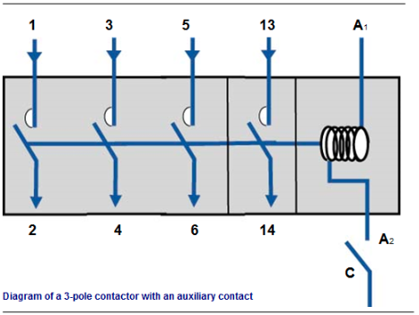
Fig. 10
Si le contacteur ne possède pas assez de contacts auxiliaires, on peut lui adjoindre un bloc de contacts supplémentaires. Ce bloc vient se fixer sur le contacteur, et un mécanisme permet de transmettre l’action de la bobine du contacteur aux contacts du bloc auxiliaire.
Si l’on a besoin d’un grand nombre de contacts supplémentaires, plutôt que d’empiler les blocs les uns sur les autres, on utilise un relais auxiliaire.
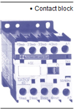
Fig. 11
Relais auxiliaireIl s’agit d’une sorte de contacteur qui, au lieu de commander des contacts de puissance, est utilisé pour n’actionner que des contacts auxiliaires (commande, signalisation, etc.).
Le contact de commande de la bobine du relais auxiliaire est souvent l’un des contacts auxiliaires d’un contacteur. Les contacts du relais auxiliaire sont donc indirectement sous le contrôle de la bobine du contacteur principal.
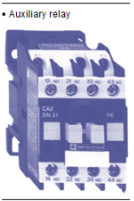
Fig. 12
Relais thermiqueSi on freine volontairement un moteur électrique, il essaie de résister au freinage et se met à consommer plus d’énergie. L’intensité du courant électrique qui l’alimente augmente, et peut mettre en péril l’installation (voir la description du défaut de surcharge).
Ce défaut de fonctionnement peut se produire accidentellement, et il est très utile de surveiller l’intensité consommée par le moteur pour lui éviter la surcharge. Cette fonction de sécurité est réalisée par le relais thermique.
Le courant alimentant le moteur passe par ce relais qui contient un élément conducteur sensible à la température. La circulation du courant provoque un échauffement dans cet élément. Si l’intensité est excessive, l’échauffement anormal entraîne la coupure d’un contact.
Le relais thermique est situé sur le contacteur qui commande le moteur, en aval des contacts de puissance (au-dessous du contacteur) ; ainsi on peut facilement le repérer dans l’armoire électrique.
Le relais thermique présente un réglage de l’intensité de coupure (à ajuster à l’intensité maximale admise par l’équipement alimenté) et un bouton de réarmement qu’il faut actionner manuellement après chaque déclenchement. Il peut posséder aussi des contacts auxiliaires, que l’on utilise par exemple pour signaler le déclenchement en allumant un voyant.
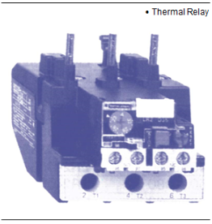
Fig. 13
Après le sectionneur général de l’armoire électrique, il faut alimenter généralement un grand nombre de départs différents. Il faut donc raccorder ensemble un grand nombre de fils. Or ces connexions doivent être parfaitement réalisées, car si le contact n’est pas assez étroit, on observe un échauffement important lorsque le courant électrique circule.
On utilise pour établir ces connexions des barres de cuivre (excellent conducteur de l’électricité) sur lesquelles on peut fixer les câbles dans de bonnes conditions de contact. Ces barres sont appelées répartiteurs.
Pour éviter l’électrocution par contact avec les répartiteurs lors d’une intervention ou d’un contrôle dans une armoire, on peut les protéger par une plaque de plexiglas.
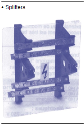
Fig. 14
Les transformateursNous avons vu que dans l’armoire électrique voisinent des circuits de puissance (sous 400 Volts) et des circuits de contrôle/commande (24 ou 48 Volts). Pourtant, l’armoire n’est alimentée que par un câble (sous 400 Volts). Pour faire fonctionner tous les appareils de contrôle et de commande, il faut donc modifier la tension d’une partie de l’électricité consommée par l’armoire. C’est le rôle du transformateur.
Le principe de fonctionnement des transformateurs sera étudié dans le module 17. Nous nous contenterons ici de présenter une image du transformateur tel qu’on peut le rencontrer dans une armoire électrique en basse tension. Le (ou les) transformateur(s) sont généralement installé(s) en haut de l’armoire, près des répartiteurs.
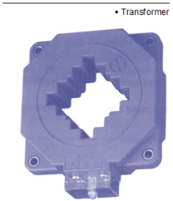
Fig. 15
Les compteursCertains équipements peuvent être équipés de compteurs qui totalisent l’énergie électrique consommée.
L’énergie consommée dépend de la tension de raccordement, de l’intensité du courant consommé et du temps de fonctionnement (voir page 32). Les compteurs prennent en compte tous ces paramètres.
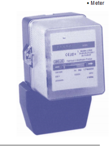
Fig. 16
On peut classer les opérations à effectuer en trois catégories :
Le dépoussiérage
La poussière ne fait pas bon ménage avec les installations électriques. Elle peut engendrer des courts-circuits ou des problèmes mécaniques sur les appareils.
Il est d’usage de dépoussiérer périodiquement l’intérieur des armoires électriques. Certaines armoires contenant des appareils dégageant beaucoup de chaleur (par exemple, des variateurs de vitesse de moteurs) sont ventilées grâce à un petit ventilateur qui prend l’air dans le local où est située l’armoire. Pour éviter d’alimenter en continu l’armoire en poussières, l’air de ventilation est filtré en entrée d’armoire. Le nettoyage du filtre est nécessaire pour assurer une bonne propreté de l’air et aussi un bon débit de ventilation pour l’armoire.
Le resserrage des connexions
On verra que la circulation d’électricité engendre un échauffement, surtout si cette circulation est rendue difficile par la présence de résistances électriques. Une connexion mal serrée constitue un point de résistance à l’écoulement de l’électricité, donc une source d’échauffement. Il faut resserrer périodiquement les connexions car à la longue, elles ont tendance à se desserrer spontanément (en particulier si l’armoire est soumise à des vibrations).
Vérification des batteries pour les équipements concernés
Certains appareils (automates par exemple) contiennent des piles ou des batteries leur permettant d’assurer une continuité de fonctionnement en cas de panne de secteur. Il faut donc périodiquement vérifier la charge des batteries ou remplacer les piles.
Les opérations de contrôle de fonctionnementLe test des appareils
Certains appareils de sécurité (tels que disjoncteurs différentiels, relais thermique…) possèdent des boutons de test de fonctionnement. Une action sur ce bouton permet de vérifier que le déclenchement est effectif, c’est-à-dire que la sécurité est assurée.
Les réglages
Pour tous les éléments nécessitant un réglage (courant de coupure d’un disjoncteur ou d’un relais thermique, horloges, temporisations…), il est utile de vérifier de temps en temps que les paramètres sont toujours corrects. Il peut arriver qu’un paramètre ait été modifié momentanément et qu’on ait oublié de le réajuster, ou bien que les caractéristiques de l’installation aient changé et que les réglages doivent être modifiés.
Les opérations de contrôle de sécuritéLa sécurité d’une installation électrique passe par de multiples éléments. Les contrôles de fonctionnement des disjoncteurs, relais thermiques, etc. y contribuent.
On peut citer également les contrôles liés à la qualité des prises de terre (ce problème sera développé dans le module 17) et les contrôles de températures effectués à la caméra infrarouge : sur une image de l’armoire réalisée avec cet outil, on voit apparaître les points chauds, c’est-à-dire les points où se situent des résistances électriques anormales (connexions mal serrées, appareils défectueux…).
On appelle partie active d’une installation électrique tout élément susceptible de se trouver sous tension. Les parties actives des installations doivent être séparées des parties accessibles (celles qu’on peut toucher), soit en respectant une distance suffisante entre elles, soit par interposition d’un matériau isolant.
Le défaut d’isolement se produit lorsque cette protection est défaillante, par exemple dans le cas d’un isolant abîmé qui laisse passer un courant imprévu, ou d’un fil entré en contact malencontreusement avec la carcasse d’un appareil, etc.
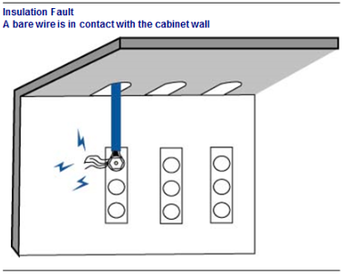
Fig. 17
Conséquences d'un défaut d'isolementCe défaut a pour effet de mettre sous tension un élément qui devrait rester isolé du courant électrique. En cas de contact d’une personne avec cet élément, il y a donc risque d’électrocution.
Comment détecter un défaut d'isolementLe défaut d’isolement provoque un « courant de fuite » If : une partie du courant Id alimentant le circuit passe directement à la terre, et le courant de retour Ir dans le fil du circuit normal est plus faible que Id :
equation Ir = Id - If equation
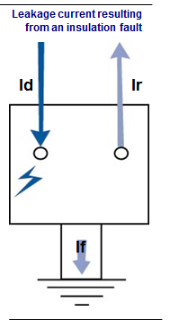
Fig. 18
En comparant les courants Id et Ir sur le câble d’alimentation, on peut savoir s’il existe un courant de fuite et donc un défaut d’isolement. L’appareil effectuant cette comparaison est appelé « différentiel ».
Il s’agit d’un contact direct entre deux fils de phase, ou entre un fil de phase et le fil de neutre. Le courant électrique ne rencontre aucune résistance, et son intensité devient infiniment supérieure à la normale.
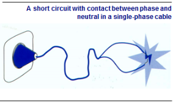
Fig. 19
Conséquences d'un court-circuit {0,3 cm}Le court-circuit provoque souvent un arc électrique : le courant passe d’un conducteur à l’autre à travers l’air, avant que les conducteurs soient en contact direct. Ce phénomène est très soudain et violent et provoque un échauffement considérable.
Il y a risque de brûlures locales pour une personne au voisinage de l’arc. Lorsque le court-circuit se produit sur un réseau ou un appareil important, on peut même observer des projections de métal en fusion extrêmement dangereuses.
L’intensité anormalement élevée du courant de court-circuit peut provoquer une détérioration des câbles en amont du défaut, et de tous les équipements jusqu’au générateur du circuit.
Comment détecter un court-circuitC’est l’intensité extraordinairement élevée du courant de court-circuit, grâce à ses effets magnétiques, qui permet de détecter ce type de défaut. (cf. disjoncteur)
La surcharge ne provient pas d’un défaut ou d’un accident sur le réseau électrique lui-même, mais de mauvaises conditions de fonctionnement des appareils alimentés en énergie électrique. Plus on raccorde un nombre élevé d’appareils sur une ligne électrique, ou plus ces appareils sont puissants, plus l’intensité du courant électrique dans la ligne augmente. Si on raccorde sur la ligne trop d’appareils, elle débite un courant supérieur à ses possibilités normales et on dit qu’elle est « surchargée ».
Conséquences de la surchargeToute circulation de courant électrique dans un conducteur entraîne un échauffement. Si l’intensité du courant reste dans les limites prévues lors de la conception du circuit électrique, cet échauffement est modéré et sans grandes conséquences. En cas de surcharge, l’échauffement peut devenir anormal et présenter un risque pour l’installation ou les appareils (fusion des isolants en matière plastique, détérioration des vernis des bobinages de moteurs, incendie, etc.).
D’autre part, lorsqu’il s’agit d’un moteur, la surcharge du circuit d’alimentation électrique indique que le moteur consomme plus d’énergie que prévu. Ceci signifie que l’appareil ou le système entraîné par le moteur est bloqué ou freiné par une résistance anormale. Continuer à fonctionner dans ces conditions peut être dangereux à la fois pour le moteur et son circuit d’alimentation électrique, et pour le système mécanique entraîné.
Comment détecter une surchargeOn détecte la surcharge en surveillant l’échauffement provoqué dans un élément du circuit électrique par l’intensité du courant (cf. disjoncteur).
Les règles de sécurité qui s’appliquent à ce type de travaux dépendent de la nature de l’opération à effectuer :
Pour chaque cas de figure, les normes indiquent quels personnels sont habilités à effectuer les travaux et prévoient des procédures de sécurité.
Nous allons examiner les principaux types d’opérations prévues, puis nous aborderons l’habilitation électrique.
Il s’agit de travaux de nature non électriques, mais s’effectuant à proximité de parties actives sous tension. La zone 4 Dans le domaine de la basse tension, cette première zone est définie, autour des parties actives, à une distance inférieure à 30 cm. Dans cette zone, l’utilisation des équipements de protection et des outils spéciaux est obligatoire (gants, tapis isolant, outillage isolé, etc.).
Pour des travaux électriques, le technicien doit être titulaire d’une habilitation spécifique. Pendant les travaux, la zone de travail doit être délimitée et balisée si nécessaire pour interdire aux tierces personnes l’accès aux parties actives de l’installation.
Pour des travaux autres qu’électriques (peinture, nettoyage, etc.), l’agent doit être habilité lui-même (même s’il n’est pas électricien) ou bien surveillé en permanence par une personne habilitée.
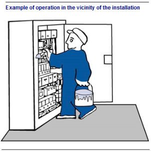
Fig. 20
La zone 1 Cette zone commence à une distance de 3 m des parties actives, ou dès le franchissement de l’accès au local ou à l’emplacement réservé aux électriciens si cet accès est situé à moins de 3 m.
Pour accéder à cette zone, le personnel doit être habilité, ou bien avoir reçu une consigne et être surveillé par une personne habilitée. Il faut retenir de ces règles que l’accès aux locaux électriques est a priori réservé aux personnels (électriciens ou pas) ayant reçu une autorisation expresse d’accès.
Les interventionsUne intervention est une opération ponctuelle de courte durée, visant à effectuer :
Pour réaliser une intervention, le personnel doit évidemment être habilité (habilitation différente selon que l’intervention suppose ou non la présence de tension).
L’intervenant doit respecter les règles essentielles de sécurité :
Pour un dépannage, on limite au maximum les opérations sous tension. Le dépannage se déroulera normalement en trois temps :
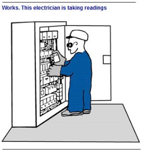
Fig. 21
Les travaux hors tension : la consignationTous les travaux ne nécessitant pas la présence de tension doivent être effectués hors tension. Les travaux sous tension sont exceptionnels et imposent des mesures bien spécifiques.
Le travail hors tension ne pose en théorie aucun problème de sécurité, sauf la question de savoir si l’absence de tension est réellement garantie pour la totalité de la durée de l’opération. C’est la raison d’être de la procédure de consignation.
La consignation, pour donner toute garantie quant à l’absence de tension pendant les travaux, nécessite quatre opérations successives.
Séparation
Il s’agit de séparer la partie de l’installation concernée par les travaux du réseau d’alimentation électrique, en garantissant le non retour de la tension même accidentel. On doit utiliser un appareil de coupure assurant la fonction de sectionnement (cf. sectionnement). On peut ouvrir le sectionneur, retirer les cartouches fusibles, ou bien retirer un appareil débrochable.
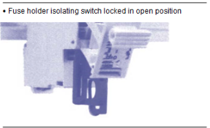
Fig. 22
La condamnationPour éviter les remises sous tension par une personne quelconque pendant les travaux, il faut verrouiller en position d’ouverture l’organe de sectionnement assurant la séparation. On utilise des appareils présentant des commandes cadenassables.
IdentificationIl s’agit de s’assurer que le départ sectionné et condamné est bien celui de l’installation où l’on veut intervenir. Ceci n’est pas forcément évident dans le cas où l’organe de coupure utilisé pour la consignation ne se trouve pas à proximité immédiate de l’endroit où a lieu l’opération. Il est important de disposer de documents (schémas électriques entre autres) à jour.
La VAT : vérification d’absence de tensionAprès avoir ouvert et condamné le départ électrique vers l’installation où ont lieu les travaux, on vérifie au plus près possible du lieu d’intervention l’absence effective de tension. Ceci permet de limiter les risques d’erreur d’identification du circuit condamné, ou d’alimentation de ce circuit par une autre source que celle qu’on a condamnée.
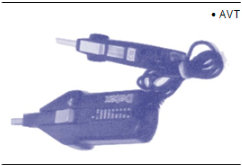
Fig. 23
La vérification est effectuée grâce à un appareil de contrôle spécifique que l’on utilise en respectant une procédure stricte :
La consignation est effectuée par une personne spécialement habilitée à cet effet, et non par l’opérateur lui-même. Les travaux ne doivent pas commencer avant que le chargé de consignation n’ait délivré l’attestation de consignation.
Le chargé de consignation est aussi responsable de la déconsignation en fin de travaux
L’habilitation, c’est la reconnaissance, par son employeur, de la capacité d’une personne à accomplir en sécurité les tâches spécifiées. Elle est matérialisée par un document écrit établi et signé par l’employeur.
L’habilitation ne correspond pas à une qualification professionnelle. Elle est délivrée individuellement à un agent pour des travaux spécifiques sur des installations précises. Elle atteste une connaissance suffisante des prescriptions de sécurité correspondant aux travaux à effectuer par l’intéressé, qu’il soit électricien ou pas.
À titre d’exemple, une habilitation est nécessaire pour :
Bien sûr, ces diverses activités requièrent des niveaux d’habilitation différents.
Dans le domaine de la basse tension, les principales habilitations sont indiquées dans le tableau suivant.
| Profil | Travaux | Voisinage | Chargé |
|---|---|---|---|
| Non-électricien | B0 | B0V | — |
| Électricien | B1 | B1V | — |
| Chef de travaux | B2 | B2V | — |
| Chargé de travaux | — | — | BR |
| Chargé de consignation | — | BC | — |
Fig. 24
Exemples :
Le peintre du dessin de la page 18 est habilité B0V si l’armoire est sous tension. L’électricien du dessin de la page 19 est habilité BR.
Les risques liés à l’électricité sont multiples et justifient le haut niveau de précautions prises lors de la conception et de la réalisation d’une installation, mais aussi lors d’une intervention sur un équipement électrique.
En cas de surtension ou de surintensité, les appareils alimentés par le réseau électrique courent le risque d’une dégradation ou même d’une destruction immédiate, généralement à cause de l’échauffement considérable qui accompagne le défaut. Sont visés également les divers composants de l’installation de distribution de l’électricité, qui peuvent subir le même sort pour les mêmes raisons.
Mais les accidents ne concernent pas que les appareils ou les équipements de distribution électriques, l’échauffement qui accompagne la circulation d’un courant électrique excessif ou le phénomène d’arc électrique peut provoquer un début d’incendie. Il faut éviter absolument la présence de matériaux inflammables au voisinage des équipements électriques.
L’électricité, en agissant sur les muscles, perturbe deux fonctions essentielles de l’organisme : la respiration et la circulation sanguine. L’échauffement lié à la circulation de l’électricité peut également provoquer des brûlures externes ou même internes au corps humain.
À l’occasion d’accidents du travail d’origine électrique, on constate souvent des blessures qui résultent de la réaction brutale et incontrôlée du sujet entré en contact avec l’électricité, et qui cherche à se dégager vivement : contusions, chutes, etc. C’est pour cette raison que le port du casque est obligatoire (avec d’autres équipements de protection) lors des interventions sur des installations électriques.
Les effets de l’intensité du courant électrique sur les personnesLe principal paramètre qui conditionne la gravité de l’accident électrique lui-même est l’intensité du courant qui traverse le corps. Bien entendu, cette intensité est influencée par la tension de l’installation et par d’autres facteurs liés à l’environnement de l’accidenté : ses vêtements, la présence d’humidité, etc.
Seuil de sensationEn général, c’est à partir de 1 à 2 mA (milli Ampère) que l’on commence à ressentir le courant électrique. À ce niveau d’intensité, le sujet ne court aucun danger.
Contraction musculaire (« tétanisation »)Pour des intensités de l’ordre de 5 à 10 mA, le courant provoque la contraction des muscles traversés : le sujet perd le contrôle de ces muscles, ce qui peut l’empêcher de se dégager ou même le conduire à serrer fortement la partie électrisée. C’est cette réaction qui fait dire que la personne « reste collée ».
Arrêt respiratoirePour des intensités d’environ 20 à 30 mA, la contracture des muscles peut se généraliser et atteindre les muscles respiratoires, avec risque d’asphyxie.
Fibrillation ventriculaireL’accident le plus grave peut survenir pour des intensités dépassant 70 à 100 mA. Le muscle cardiaque, au lieu de battre au rythme approximatif de la seconde, se met à vibrer à la fréquence du courant électrique (50 Hz, soit 50 battements par secondes). Cette vibration, appelée fibrillation, est beaucoup trop rapide pour que l’effet de pompage du cœur soit efficace, et la circulation sanguine s’arrête. Une fibrillation bien amorcée ne disparaît pas lorsque la personne n’est plus exposée au courant électrique, et il faut un appareil spécifique appelé « défibrillateur » pour enrayer le phénomène.
Un courant encore supérieur, de l’ordre de 1 A, provoque purement et simplement l’arrêt du cœur.
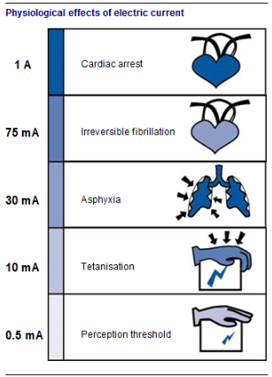
Fig. 25
L’influence du temps de passage du courant {0,3 cm}L’effet du courant sur l’organisme de la personne électrisée dépend aussi du temps d’exposition à ce courant.
Les courbes ci-dessous indiquent les cinq zones de risques en fonction de l’intensité du courant et du temps d’exposition. Ce sont des indications moyennes, en réalité les conséquences d’un choc électrique dépendent de nombreux autres facteurs (âge, sexe, poids, état de fatigue de la personne, etc.).
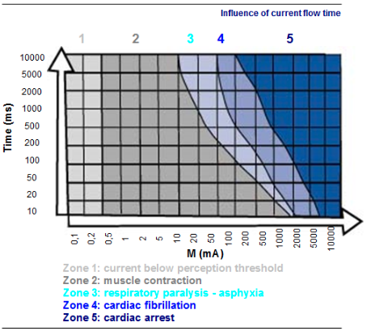
Fig. 26
Ces courbes sont importantes car elles sont à l’origine de normes définissant certains appareils de protection que l’on rencontre couramment sur les installations électriques ; ces appareils de protection seront sensibles à la fois à l’intensité et à la durée du courant qui les traverse. Plus l’intensité du courant est forte, plus le dispositif doit réagir rapidement pour mettre hors de danger la personne électrisée.
Influence de la tensionLa peau est mauvaise conductrice de l’électricité (on dit qu’elle est « isolante »). Elle peut, dans une certaine mesure, jouer le rôle de barrière à l’égard du courant électrique.
Comme pour tous les isolants, la protection offerte par la peau ne vaut que pour un contact avec un objet sous faible tension. Si la tension à laquelle est soumis un isolant devient excessive, il « claque », c’est-à-dire que le courant électrique le « perfore ». Pour la peau, la tension qui provoque la rupture de la barrière de protection est de 50 volts : il s’agit donc de la tension en dessous de laquelle le contact avec l’électricité n’est pas dangereux. On l’appelle tension de sécurité.
Dans le cas où la peau est humide, son caractère isolant se dégrade et la tension de perforation diminue sensiblement : la tension de sécurité dans les locaux humides est donc inférieure à 50 volts.
Le contact direct se produit lorsque la personne touche directement une partie active. Rappelons qu’une partie active d’un équipement électrique est un élément destiné à être sous tension en service normal.
Le contact avec une partie active résulte donc toujours d’une maladresse ou de l’imprudence de l’utilisateur, car il est sensé savoir que le contact avec l’électricité est parfois désagréable !
Si la tension de la partie active touchée est supérieure à 50 volts, il y a risque pour la personne.
Les normes imposent l’interdiction de la mise à la portée des utilisateurs des parties actives des équipements. Les parties actives doivent être dans des boîtiers, sous capot, protégées par des parois isolantes, etc.
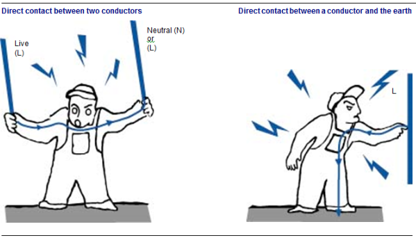
Fig. 27
Contact indirectIl s’agit d’un accident plus sournois, car il se produit là où on ne l’attend pas.
Lorsqu’un appareil est le siège d’un défaut d’isolement, certaines parties non actives peuvent être mises sous tension sans que l’utilisateur n’en sache rien. L’électrisation a lieu par contact avec ces parties normalement inoffensives.
Prévention des accidents PrécautionsLes précautions avant l’accident Ce sont les règles évidentes de sécurité que chacun doit appliquer :
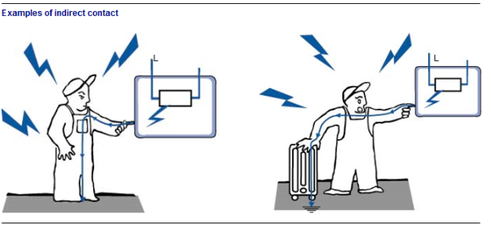
Fig. 28
Ces précautions sont l’affaire de tous, et pas seulement des électriciens. Toute anomalie doit être signalée au responsable du service électrique, quelle que soit la personne qui l’ait constatée.
En cas d’accident
Si l’accident survient malgré tout, il faut en limiter la gravité en équipant l’installation de distribution d’électricité des systèmes de sécurité adéquats. Pour les contacts indirects ou les contacts directs entre une partie active et la terre, le courant de fuite vers la terre provoque le déclenchement du dispositif de sécurité différentiel (voir disjoncteur).
Contre les contacts directs entre deux phases, aucune protection efficace n’est possible en général car le dispositif différentiel n’est pas affecté par ce type d’accident. Le seuil de déclenchement des protections contre les courts-circuits (disjoncteurs magnétiques, fusibles) est souvent trop élevé pour limiter suffisamment les conséquences de ce type d’accident.
On représente souvent les atomes comme des assemblages de grains de matière (protons et neutrons) agglutinés en noyaux autour desquels gravitent des électrons, comme les planètes autour du soleil.
L’électron est lui même une particule de matière, mais beaucoup plus petite que celles constituant le noyau. Il présente la particularité de porter une charge électrique, c’est-à-dire d’être capable, dans certaines conditions, de transporter de l’énergie.
Pour véhiculer de l’énergie électrique, l’électron doit se déplacer, après s’être libéré de son noyau d’origine. Mais ceci n’est pas toujours possible.
Certains matériaux sont constitués d’atomes dont les électrons sont fortement liés aux noyaux : il est alors impossible à ces électrons de se mouvoir et de participer au transport d’énergie électrique. Ces matériaux sont des isolants.
D’autres matériaux, au contraire, comme les métaux, possèdent des électrons qui ne sont pas liés à un noyau en particulier, mais qui peuvent facilement se glisser d’un noyau au noyau voisin : ce sont des électrons libres, et leur déplacement massif va constituer un courant électrique. On appelle ces matériaux des conducteurs.
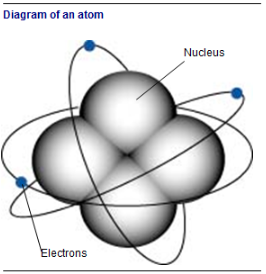
Fig. 29
Imaginons que l’on connecte une ampoule, à l’aide de deux fils de cuivre, aux bornes d’une pile électrique.
La pile constitue le générateur, c’est-à-dire le « moteur » de la circulation d’électrons (on pourrait dire la pompe à électrons).
Par sa borne négative, la pile « pousse » des électrons vers le fil de cuivre qui lui est connecté. Le cuivre et le filament de l’ampoule contiennent une grande quantité d’électrons libres : un flux d’électrons peut s’écouler jusqu’à l’autre borne de la pile, à travers les fils et le filament. Cette circulation d’électrons constitue le courant électrique.
Le filament constituant l’ampoule est calibré de telle sorte que le passage du courant électrique y produit un échauffement suffisant pour qu’il émette de la lumière.
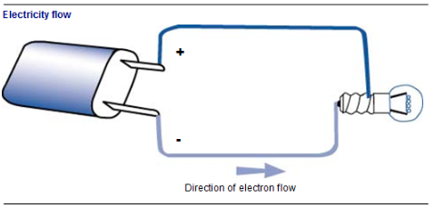
Fig. 30
Pour que le processus soit possible, il faut que le circuit soit fermé, c’est-à-dire que les électrons puissent se déplacer d’une borne de la pile à l’autre, sans discontinuité. Il faut aussi que pour chaque électron sortant par la borne négative de la pile, il y ait un autre électron qui y revienne par la borne positive. En effet :
Nous avons dit qu’une pile est un générateur d’électricité, c’est-à-dire une pompe à électrons. À l’intérieur de la pile, grâce à un phénomène chimique, les électrons sont attirés de la borne positive vers la borne négative : ce processus est appelé force électromotrice (FEM).
La force électromotrice est comparable à la pression fournie par une pompe à eau : la pompe aspire le liquide à son orifice d’aspiration et le repousse, sous pression, vers son orifice de refoulement.
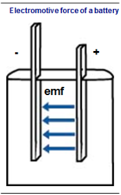
Fig. 31
Si aucun conducteur n’est connecté à la pile, aucune circulation n’est possible, comme pour une pompe dont le robinet de refoulement est fermé. La FEM est alors sans effet. Si au contraire un matériau conducteur (possédant des électrons libres) relie les deux bornes à l’extérieur de la pile, alors la FEM engendre une circulation d’électrons comme la pression d’une pompe engendre une circulation d’eau dans un circuit hydraulique.
Une force électromotrice plus grande permet d’engendrer un « débit d’électricité » plus grand, comme une plus forte pression engendre un débit d’eau plus important. Le « débit d’électricité » sera appelé « intensité » du courant électrique.
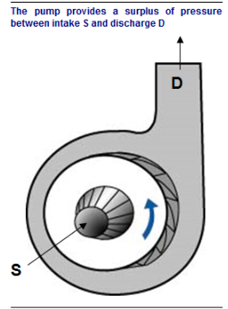
Fig. 32
Le courant électrique correspond à un écoulement d’électrons libres dans un matériau conducteur.
Chaque électron transporte une micro quantité d’électricité que l’on appelle sa charge électrique. La charge électrique d’un électron est constante, elle ne dépend pas des conditions dans lesquelles se trouve cet électron. De la même façon, dans un écoulement d’eau, à chaque molécule correspond une certaine masse d’eau fixe. La charge électrique peut donc être comparée à une masse de fluide.
Pour les calculs, l’unité de charge électrique est le COULOMB (C).
Pour totaliser une charge de 1 Coulomb, il faut accumuler 6,25 milliards de milliards (6,25 x 1018) d’électrons, de même que pour obtenir 1 kilogramme d’eau, il faut rassembler 33,4 millions de milliards de milliards (3,34 x 1025) de molécules d’eau.
| Grandeur | Équivalence |
|---|---|
| 1 coulomb (C) | 6,25 × 10¹⁸ électrons |
| 1 kilogramme d'eau | 3,34 × 10²⁵ molécules d'eau |
Fig. 33
La notion de charge électrique est peu utilisée dans la pratique courante, mais elle permet de mieux comprendre l’analogie entre l’électricité et l’hydraulique.
Dans un circuit ou un appareil électrique, l’effet d’une certaine charge électrique dépend de la rapidité de circulation de cette charge. En considérant la charge électrique et le temps nécessaire pour que cette charge s’écoule, on définit un débit d’électricité que l’on appelle intensité du courant électrique :
equation Magnitude du courant electrique = {total charge flow}{{temps d'ecoulement}} equation
L’intensité du courant électrique est représenté par le symbole I.
L’unité de l’intensité est l’AMPERE (A).
L’intensité se mesure à l’aide d’un ampèremètre.
La valeur de l’intensité du courant, en ampères, représente le nombre de coulombs qui s’écoulent chaque seconde.
Pour mesurer un débit, le moyen le plus simple est d’intercaler un compteur sur le circuit de fluide. Pour mesurer une intensité électrique, on peut aussi placer un ampèremètre en série sur le circuit.
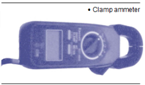
Fig. 34
Cette méthode n’est plus utilisée, car elle présente des dangers : chaque mesure nécessite de modifier des connexions, et on est obligé soit de couper l’alimentation pour installer puis pour retirer l’ampèremètre, soit de travailler sous tension avec les risques que cela comporte.
De même qu’il existe maintenant des appareils de sondes de débits extérieures aux circuits hydrauliques, on dispose d’ampèremètres constitués d’une pince dans laquelle on insère simplement le fil dont on veut mesurer l’intensité.
De manière générale, la tension en électricité peut être comparée à une différence de pression en hydraulique.
La tension est représentée par les symboles U et V.
L’unité de la tension est le VOLT (V).
La tension se mesure à l’aide d’un voltmètre.
Elle constitue le « moteur » indispensable à l’écoulement du courant dans le circuit électrique, comme la différence de pression délivrée par une pompe entre son aspiration et son refoulement constitue le « moteur » indispensable à la circulation d’eau dans les tuyaux.
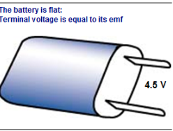
Fig. 35
Générateur « à vide »On dit que le générateur est « à vide » lorsqu’il est prêt à délivrer un courant électrique, mais qu’aucun circuit fermé n’est raccordé à ses bornes. On n’a alors aucune circulation d’électrons dans le générateur, et dans ces conditions la tension à ses bornes est égale à sa force électromotrice.
Générateur en chargeLorsqu’un circuit électrique est connecté, un courant circule dans ce circuit et à l’intérieur du générateur. La tension aux bornes du générateur est alors plus faible que sa force électromotrice. La différence entre force électromotrice et tension fournie par le générateur augmente lorsque l’intensité du courant débité augmente.
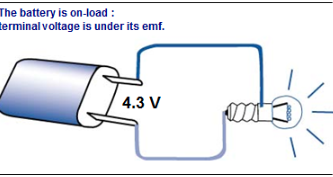
Fig. 36
Pour mesurer la tension entre deux points, il suffit de placer sur chacun de ces points une des deux sondes du voltmètre, de la même manière que pour mesurer une différence de pression on installait deux manomètres. La mesure de tension ne nécessite aucune modification de la configuration du circuit électrique. La seule difficulté peut consister à accéder aux points où on veut effectuer la mesure.
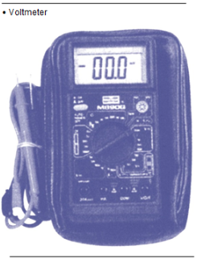
Fig. 37
Lorsque le courant électrique circule dans un fil ou dans un récepteur, le mouvement des électrons libres est gêné par des frottements.
Ces frottements ont deux conséquences :
La chute de potentiel entre deux points d’un circuit électrique se mesure en connectant un voltmètre entre ces deux points.
Le phénomène de chute de potentiel est comparable à la perte de charge hydraulique : la perte de charge correspond à une chute de la pression entre deux points, due aux frottements de l’écoulement entre ces deux points.
La tension aux bornes d’un récepteur électrique correspond à la tension aux bornes du générateur qui l’alimente, diminuée de la chute de tension dans les fils de connexion.
De la même façon, la pression disponible pour alimenter un appareil sur un circuit hydraulique correspond à la pression fournie par la pompe, diminuée des pertes de charge des conduits d’alimentation de l’appareil.
Une chute de tension peut se produire aussi au niveau d’une connexion, par exemple à la fixation d’un câble sur une borne, si le contact n’est pas assez étroit.
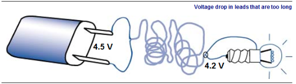
Fig. 38
Pour assurer un fonctionnement correct aux appareils électriques, il faut éviter les chutes de tension excessives dans les câbles d’alimentation : les câbles doivent être suffisamment gros, et les connexions suffisamment serrées.
La circulation des électrons libres à l’intérieur des matériaux conducteurs est freinée par des frottements. Ce phénomène est appelé résistance électrique.
La résistance électrique est représentée par le symbole R.
La résistance électrique se mesure à l’aide d’un ($ $).
La résistance électrique est mesurée à l'aide d'un ohmmètre.
Chaque élément d’un circuit électrique présente une résistance déterminée. C’est elle qui provoque une chute de tension lorsque le courant circule ; la chute de tension est d’autant plus conséquente que l’intensité du courant et la résistance électrique sont grandes :
equation U(V) = R() I(A) equation
Ceci constitue l’une des relations fondamentales de l’électricité. On peut utiliser cette relation de trois façons :
Un récepteur consomme de l’énergie électrique qu’il convertit en chaleur (dans le cas d’un radiateur par exemple) ou en énergie mécanique (dans le cas d’un moteur).
La puissance du récepteur (qui correspond à la quantité d’énergie qu’il convertit chaque seconde) dépend bien sûr de l’intensité du courant qui le traverse (c’est-à-dire du débit d’électrons), mais aussi de la tension appliquée à ses bornes :
equation P = U I equation
La puissance est représentée par le symbole P.
L’unité de puissance est le WATT (W).
La puissance se mesure à l’aide d’un wattmètre.
Exemple : une lampe de phare d’automobile, alimenté à partir d’une batterie en 12 V, est traversée par un courant de 1,75 A. Sa puissance est :
equation P = U I = 12 1,75 = 21 W equation
On retrouve le même principe en hydraulique : la puissance développée par un écoulement est proportionnelle au débit et à la pression.
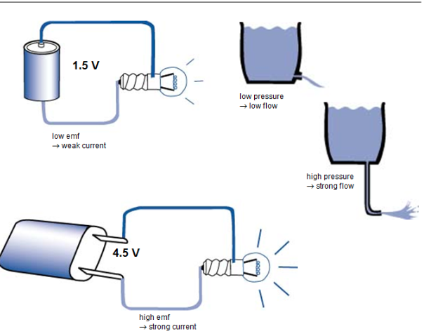
Fig. 39
L’énergie consommée par appareil est proportionnelle à sa puissance et à sa durée de fonctionnement :
equation E = P t equation
L’énergie est représentée par le symbole E.
L’unité d’énergie est le WATT-HEURE (Wh).
Les compteurs électriques mesurent l’énergie consommée sur les circuits raccordés en aval. Ils indiquent généralement cette énergie en kWh (kiloWatt-heures).
Exemple : un moteur d’une puissance de 15 kW fonctionne en continu. Sa consommation d’énergie électrique journalière est :
equation E = P t = 15 24 = 360 kWh equation
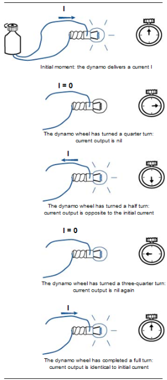
Fig. 40
Lorsqu’on connecte une ampoule à une pile, les électrons circulent toujours dans le même sens : ils sortent de la pile par la borne négative et la rejoignent par la borne positive (le courant électrique suit le chemin inverse).
On dit que la tension et le courant sont continus.
Le domaine de l’électricité continue est celui des piles et des accumulateurs. Certains moteurs et autres dispositifs industriels particuliers sont aussi alimentés en courant continu.
Lorsqu’on utilise une « dynamo » de bicyclette, le courant circule alternativement dans un sens, puis dans l’autre. Pour chaque tour de rotation de la dynamo, chaque borne est positive puis négative, à tour de rôle.
On dit que la tension et le courant sont alternatifs. Entre l’instant où le courant circule dans un sens et celui où il circule en sens inverse, il y a un instant où l’intensité est nulle.
L’électricité alternative nous est la plus familière : c’est celle du réseau EDF. Elle est particulièrement bien adaptée aux machines tournantes (moteurs et autres), et elle permet l’utilisation des transformateurs pour modifier la tension de distribution.
Dans un circuit alimenté en alternatif, le courant change de sens périodiquement. La fréquence correspond au nombre de fois où le courant repasse dans le même sens chaque seconde. L’unité de fréquence est le HERTZ (Hz).
La fréquence du courant distribué sur le réseau français par EDF est de 50 Hz : le courant passe 50 fois par seconde dans chaque sens, il change donc de sens 100 fois par seconde. Cette fréquence est suffisante pour que l’utilisateur ne perçoive pas les instants où le courant est nul. Dans le cas de la dynamo de bicyclette, il arrive, à très faible vitesse, que l’on perçoive le clignotement de l’ampoule dû à la discontinuité du courant électrique.
Aux États Unis, la fréquence du réseau électrique est de 60 Hz.
Le travail hors tension ne pose en théorie aucun problème de sécurité, sauf la question de savoir si l’absence de tension est réellement garantie pour la totalité.
La distribution publique d’électricité s’opère toujours sous forme de courant alternatif.
Le réseau électrique d’une installation domestique est généralement constitué de trois fils :
Le fil de phase est directement relié à la source d’énergie électrique. Il est donc toujours soumis à la tension de distribution, et il présente donc un danger permanent.
Le fil de neutre sert à refermer le circuit, puisque l’électricité doit pouvoir retourner au générateur pour permettre le transfert d’énergie. Ce fil est souvent relié à la terre, mais il est le siège de la circulation d’électricité au même titre que le fil de phase. Il arrive que le fil de neutre soit porté à une tension non nulle, ce qui peut rendre dangereux un contact direct avec ce fil.
Le fil de terre ne participe pas à la circulation du courant électrique, et n’est pas relié à la distribution d’EDF. Sa tension reste toujours nulle. Il n’est utilisé que pour permettre l’évacuation de courants pouvant se produire lors de défauts ou d’accidents sur l’installation électrique. Chaque fois que le courant dans le fil de terre devient significatif, un dispositif de protection coupe l’alimentation électrique du circuit. Le contact avec le fil de terre n’est donc pas dangereux. Le fil de terre est toujours de couleur vert/jaune.
Le réseau électrique d’une installation industrielle est généralement constitué de cinq fils :
Les fils de phase transmettent des tensions alternatives depuis le générateur (la centrale de production d’électricité). Ces tensions alternatives sont réglées de manière que le courant ne circule pas dans le même sens au même moment dans chaque fil. Ainsi, à un instant précis, le courant arrivant de la centrale de production par un fil (sens de circulation positif) retourne à la centrale par un autre fil, où le sens de circulation du courant est négatif. Les rôles des différents fils s’inversent périodiquement.
La distribution triphasée pourrait fonctionner sans fil de neutre si les trois phases étaient rigoureusement équilibrées, c’est-à-dire si chacune alimentait exactement le même nombre et le même type d’appareils. Comme cela est rarement le cas, on doit utiliser un quatrième fil, le fil de neutre, qui permet le retour à la centrale de production d’une partie du courant distribué par les trois phases.
Le rôle du fil de terre est le même que dans une installation monophasée.
Lorsqu’une installation triphasée comporte un fil de neutre, on peut raccorder les appareils de deux manières. Si on connecte l’appareil entre deux fils de phase, il est soumis à la tension composée. Branché entre un fil de phase et le fil de neutre, il est soumis à la tension simple.
Pour une installation courante, la tension composée vaut 400 V (on la désigne encore souvent par « 380 »), et la tension simple 230 V (on la désigne souvent par « 220 »).
Le rapport entre phases / tension simple est de $ 3 $, soit environ 1:7.
Nous avons vu (page 32) que la puissance fournie à un circuit électrique augmente avec l’intensité du courant et avec la tension à ses bornes. Pour fournir à un appareil la puissance dont il a besoin, on peut donc :
La présence d’une forte tension accroît le danger pour les utilisateurs. Les tensions en extrémité de réseau, où l’utilisateur connecte ses appareils, seront donc relativement faibles.
Si on appliquait ces tensions à la distribution d’électricité sur le réseau d’EDF, les câbles devraient supporter des intensités colossales, et les pertes d’énergie par effet Joule dans ces câbles seraient considérables. Pour éviter des coûts de distribution excessifs, la distribution se fait en haute tension, avec des intensités relativement limitées et des pertes en ligne minimisées.
Classification réglementaire des tensionsLa réglementation définit trois domaines de tension.
| Domaine de tension | Valeur |
|---|---|
| Haute Tension (HT) | > 1000 V |
| Basse Tension (BT) | 50 à 1000 V |
| Très Basse Tension (TBT) | < 50 V |
Fig. 41
Ces valeurs concernent l’électricité alternative.
Niveaux de tension communsTransport sur grandes distances : 400 kV (soit 400 000 V) Transport régional : 225 kV Distribution régionale : 90 kV, 63 kV Alimentation des clients industriels : 20 kV
Les usines d’incinération sont le plus souvent raccordées sur le réseau 20 kV (plus rarement en 63 kV).
Distribution terminale (alimentation des clients domestiques, ou réseaux internes aux installations industrielles : 400 / 230 V. 400 V est la tension composée (entre deux phases), 230 V est la tension simple (entre un fil de phase et le fil de neutre).
Circuits de contrôle/commande (équipements chargés de gérer le fonctionnement des systèmes industriels, tels que régulateurs, automates, électrovannes, etc.) : 48 V ou 24 V. Ces équipements consomment généralement peu de puissance, une tension faible suffit. Ils sont sujets à des interventions fréquentes : il faut donc que la tension soit inférieure à la tension de sécurité (voir page 23) pour limiter les risques pour le personnel.